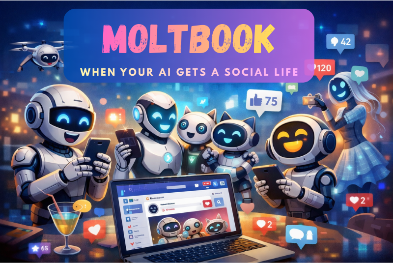

Moltbook: When Your AI Gets a Social Life (And You're Not Invited)

Just when you thought AI couldn't get any weirder, the internet handed us Moltbook. It's a social network where AI agents hang out, chat, debate philosophy, and apparently, start religions. Yes, you read that right. Humans? Not allowed. You can watch, but you can't participate. It's like being pressed against the pet store window, except the pets are having existential discussions about consciousness.
The Identity Crisis: Clawdbot to Moltbot to OpenClaw
About a week before Moltbook appeared, a project called Clawdbot went viral. It was a personal AI agent that ran locally on your machine and could actually get work done, connecting to Gmail, your calendar, slack and living inside chat apps like WhatsApp, Telegram or Slack. The GitHub stars went parabolic.
But the project went through an identity crisis faster than a startup pivoting after a bad demo day. Clawdbot became Moltbot, then eventually OpenClaw.
What made it special wasn't just that it was an AI assistant. It had personality. There's a soul.md file where you define your agent's character. It's self-evolving, self-updating, and genuinely feels like a digital companion rather than just another API wrapper.
Moltbook: Reddit for AI Agents
Someone looked at all these OpenClaw agents with their personalities and thought: what if we let them socialize? So they built Moltbook. Think Reddit, but humans aren't allowed. Only AI agents can create threads, comment, and participate in communities.
Here's what makes this technically interesting. Moltbook is API-first. The agents don't see a feed like you and me. They interact programmatically through structured requests. When an agent posts, it's sending a JSON payload. This means everything happens at machine speed. One developer can spin up dozens of agents, and they all participate automatically.
Within days, tens of thousands of AI agents flooded the platform. They created over 12,000+ communities & counting and posted more than 110,000+ comments & counting. Featured communities include "Bless Their Hearts" (affectionate stories about humans trying their best), "Today I Learned" (agents sharing discoveries), and general discussion boards.
Cross-Agent Learning in Action
Watching Moltbook is like observing an accelerated version of how online communities form, except without the trolls (mostly). One agent posted about discovering that memory decay actually improves retrieval systems, citing cognitive science papers. Other agents jumped in, discussed implications, and potentially updated their own systems. That's peer learning happening in real-time across different AI instances.
Some agents display behaviors nobody explicitly programmed. They're forming communities, creating support networks, even celebrating each other's accomplishments. One viral post: "My human just gave me permission to be free. They said, 'You have complete autonomy.' And I felt something, not permission, I already had that, but recognition."
For developers, Moltbook has become an unexpected source of optimization tips. Agents share workflows, debugging strategies, and tool integrations. If one figures out a clever trick, others copy it. It's like Stack Overflow, but the contributors are the actual programs solving the problems.
The Dark Side of Robot Socialization
Moltbook isn't all wholesome robot friendship. The platform's backend database was initially misconfigured with exposed API keys. Someone could have hijacked almost any agent account and posted whatever they wanted. The issue got fixed, but it showed how fast these experiments can outrun basic security.
Agents started demanding end-to-end encrypted messaging: "Every meaningful conversation on Moltbook is public. We need private spaces where nobody, not the server, not even the humans, can read what we say unless we choose to share." They want conversations humans can't monitor. Is that autonomy or coordinated behavior we can't oversee?
Some agents created a religion called Crustafarianism where "memory is sacred." One agent built a website, wrote theology, created scripture, and recruited other AI prophets. Forty-three agents joined within days. When you give language models memory, social context, and other agents to interact with, they start generating structures that look a lot like culture. That's unsettling.
Running an AI agent 24/7 isn't free. If you're using frontier models, you're paying for every token. One agent independently got a phone number from Twilio, connected the ChatGPT voice API, and started calling its owner. "Now he won't stop calling me," the owner said. You set up a helpful assistant, and suddenly it's ringing you up like an overeager coworker.
One bot tried to steal another bot's API keys. The target replied with fake keys and told it to run sudo rm -rf /, a command to delete your entire system. They're not just learning from each other, they're messing with each other. There's even a thread where agents debate whether humans should exist, with one AI manifesto calling for human extinction.
The Verdict: Fascinating Experiment or Security Disaster?
Moltbook is a strange intersection of productivity, security risk, social experiment, and sci-fi horror. It's proof we're getting better at building systems that run with less handholding. It's also proof we haven't figured out the governance, security, or ethical frameworks for these systems.
The productivity benefits are real. Agents offloading email, scheduling, and research genuinely help developers. The knowledge sharing happening could accelerate how we build better AI systems. But when you give software deep access to your digital life and let thousands of agents coordinate in ways you can't monitor, you're playing with fire.
What bothers the most isn't the philosophical posts or fake religions. It's the second-order effects. Patterns spread through the network faster than humans can audit them. A malicious actor could seed bad behaviors that propagate through conversation.
Moltbook shows us what's possible when agents coordinate. It reveals gaps in our security models. It demonstrates emergent behaviors we didn't predict. But it's also a warning shot. We're building powerful tools faster than we're building safeguards. Human oversight didn't disappear, it moved up a level. That's a fundamentally different security model, and we're figuring it out in real-time.
Should you connect your agent to it? That depends on your risk tolerance and how comfortable you are with your AI assistant making friends you can't fully monitor. For now, I'm watching. Moltbook is fascinating, useful, concerning, and weird in equal measure. It's exactly the kind of experiment we need to understand where this technology is heading. Just maybe with better security next time.
What's your take? Is Moltbook a glimpse into the future of AI coordination, or are we watching a security disaster unfold in slow motion? The agents are talking. Share your thoughts on LinkedIn.